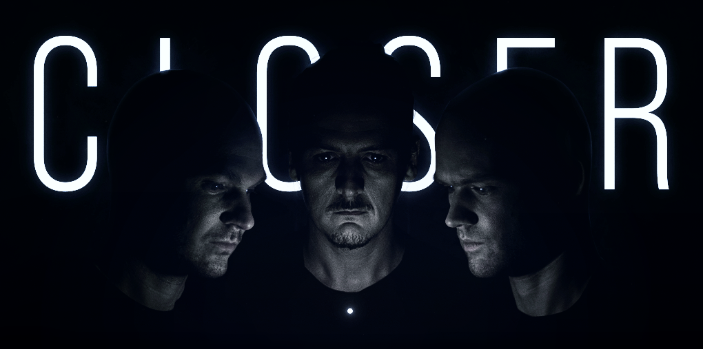
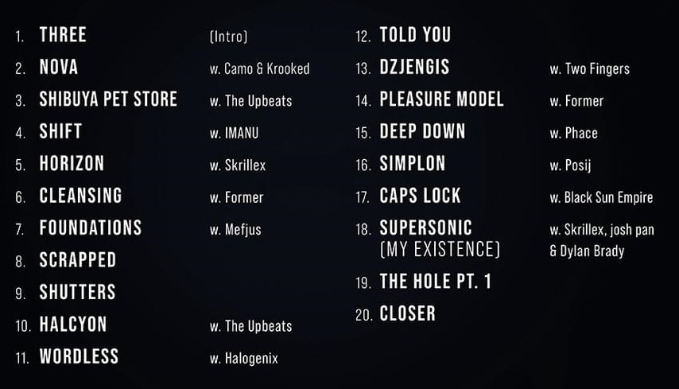

Hello Person.
After Outer Edges we were trying to find a new direction for Noisia. This resulted in an extensive journey that took us through a lot of new ideas and music.
Although we eventually decided to stop, we are proud of the things we made along the way, and these tunes were always meant to be part of a larger whole. So before we finally close the book on Noisia, we wanted to share them with you, on one last album. Previously released or newly finished, they all represent directions we enjoyed exploring.
In the end, we didn't manage to figure things out. But we did get closer.
IN ALL PLATFORMS: